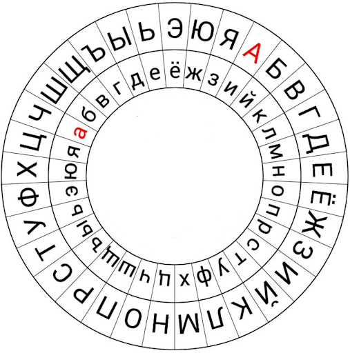

Пример расшифрования:
В качестве ключа выберем последовательность букв в алфавитном порядке. Расшифруем сообщение “ИифейнБсуй”.
Первая заглавная буква в данном сообщении - «И». Найдём её на внутреннем диске и сопоставим с «А» на внешнем. Переходим к расшифрованию первых пяти строчных букв из шифртекста (то есть пока не дойдём до следующей заглавной буквы, которая будет задавать новое положение внутреннего диска). Ищем букву «и» на внутреннем диске и смотрим какой букве она соответствует на внешнем диске. Получим, что «и» перейдёт в «а», «ф» - в «л», «е» - в «ь», «й» - в «б», «н» - в «е». Дойдя до следующей заглавной буквы в зашифрованном сообщении, необходимо сделать сдвиг внутреннего диска. Сопоставляем букву «Б» на внутреннем диске с «А» на внешнем и продолжаем расшифрование.

Получим открытое сообщение: “Альберти”.